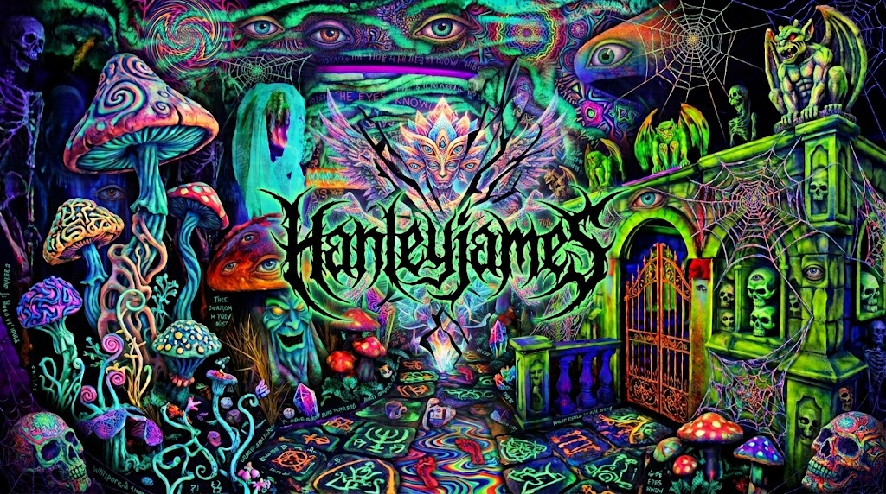
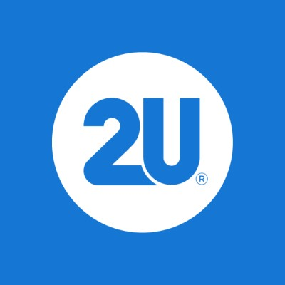

jhanley-doobay
About Me
James Hanley
Software Engineer
Software Engineer and Consultant, 8+ years. I am professionally focused on .Net, SSIS, Node.js & Typescript; academically focused on Python and Java. Currently finishing up a B.S. in Computer Science. I read Philosophy, Political Theory, Sci-fi and Horror in my spare time.
📍 Upstate NY, United States
Experience
Excellus BCBS
June 2024 — Present
Software Engineer
- Reduced vulnerabilities in legacy VB web application by 80% in a 3 month period
- Reduce runtime of SSIS job from 9-12 hours, to 10 minutes
- Implemented .Net spreadsheet management systems for SSIS, reducing daily error rates
Doobay L.L.C.
November 2024 — Present
Founder
- Software Consultation for MediaNews Group. Manage and update finanical email alert system. Upgrade core library, migrating away from MikroORM to Knex.js. Improve reliability and metrics for internal AdTech financial system.
- Updating and creating new functions to improve performance, readability and maintainability of legacy .Net applications.
- Develop and deploy new changes based around urgent legal requirements on legacy T-SQL tables and stored procedures.
- Helping in the process to modernize critical parts of the application using Powerapps, Power automate Flow, .Net Core and ORMS (EFC, Dapper).
- Have ownership over and helped finish a Functional React application using FP-TS, MS Sharepoint and modifying an older libraries to help create a portal for various clients and lawyers. The application allows users and lawyers to upload patent pool data based on the patent pool via xlsx or manual data entry.
- I own and helped finished an administration panel that allows lawyers and devs to modify patent pools, columns, formulas and error management for current and new patent pools platform. These two solutions combined replace a prior legacy application, making it easier for non-mpegla clients to interface with our platform.
- Overhaul Bilateral Trade Agreements sections on Legacy Software. Modify Tax exemption logic for Bilateral Trade Agreements based on Licensees and Licensors combinations. Update Disclosure Options, Unit Caps, Pending and other settings with Stored Procedures and Telerik/kendo UI updates. Add spreadsheet export options to multiple pages based on Bilateral Trade Agreement Data. Allow Bulk Delete and Update of Reporting Items as well as history tracking of deletion using Telerik, Javascript, TSQL and .Net.
- Update history tracking on Adhoc Redirection items with TSQL and .Net Controller/Router to allow users to track changes on multiple levels of the application.
- Fix Settlement Statement Report Generation emails, BLA tax emails and Cover Letter Reports.
MediaNews Group
September 2021 — June 2023
Software Engineer
- Rewrote depreciated Wordpress application in NodeJS using google-ads-api to generate keywords, cpc, and other metrics for internal Marketing Ads team. This tool is currently in use across multiple organizations. The tool uses Web Components, Lit, google-ads-api, and React.
- Rewrote and optimized the API to manage keyword generation, consistent chart generation, and PDF generation for the react application.
- Helped in the planning and debugging of R service that is used to calculate ad costs and their monthly rollover budgets. This is used to make sure that our Ads Team does not overspend any ads budgets on Facebook, Microsoft/Bing, Google and Snapchat. Helped reduce costs by migrating the R code to NodeJS saving the company ~$10k+ per year.
- Helped migrate a large portion of the legacy services our team used from on-prem to AWS. Projects use CodeBuild, Docker, S3, Lambda Functions and Step Functions.
- Helped move the majority of our builds from CircleCI to Github Actions to help reduce costs and streamline commits and version control.
- Developed and deployed software to notify employees on their performance for ad cycles from various Ad platforms with Node.js hosted on AWS as a part of a step function that imports ad revenue metrics. This notification system allows employees to receive critical updates, saving the company money and building our clients trust in case there are any issues in calculations.
- Worked with the team to build a set of tools in Typescript that managed campaign budgets across multiple ad platforms. This allows our team to seamlessly manage ad budgets all on one platform.
- Developed SystemD services for managing and sending alerts around sets of legacy applications to slack channels for the team to catch time sensitive errors.
- Primary writer of all current onboarding, system and troubleshooting documentation.
- Owner of interview project for new hires.
Raves Entertainment LLC
January 2020 — May 2023
Software Engineer, Full and Part-time
- Developed and implemented a MERN stack site.
- Project includes setting up CD/CI, setting up and deploying Production and Testing environments, developing and implementing User Authentication with blog setup.
- Mentored and helped new bootcamp grads get practical experience in gaps that they might have after bootcamps.
- Developed MSFlow/Power Automate project to re enqueue failed billing data from a Kusto Cluster back into their TSQL Database. Deployed and in use by CCM Team.
- Developed and deployed DocFX projects for CCM’s internal projects, improving documentation across the org.
- Developed a POC with Azure Synapse. The scope was to explore Query as a Service option to reduce query times. The project uses Synapse, ADF, Spark, T-SQL, and Kusto. The project implemented new features that allowed for querying over non-structured object storage (ADLS gen2).
- Retired Microsoft Services and Worker roles. Created WebJobs that are deployed for use in Azure’s public-facing website. Deployed on Azure Cloud Platform and in use as part of the Cloud Cost Management Team.
- Developed and deployed custom dashboards and WIQL queries for teams on Microsoft projects. Created Power BI Dashboard for Azure Dev Ops, tracking employee work items, sprints, burndown, and overestimated Items. The project was deployed and is in use by the Microsoft team’s morning shiproom.

2U
April 2019 — July 2019
Substitute Teaching Assistant at UW University Coding Bootcamp, Contract
- Assist students in learning MERN stack skills.
dTOOR
October 2018 — December 2018
Intern Software Engineer
- Developed projects with Node.js, Javascript, Angular 7, PHP and SQL.
- Implemented a public driven opinion development cycles.
- Deployed projects on Heroku and Wordpress.
- Developed a headless CMS with MongoDB.
Verstela
January 2018 — June 2018
Laboratory Technician & Network Engineer, Contract
- Provide logistics and server migration support across Microsoft Campuses.
- Managed the installation, organization, and labeling of network and power cabling across multiple data center racks at Microsoft's Redmond Ridge 1 Data Center.